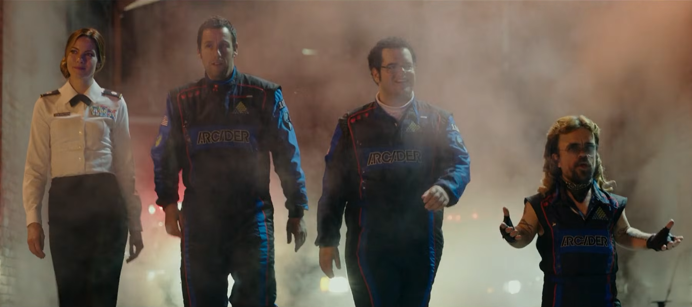
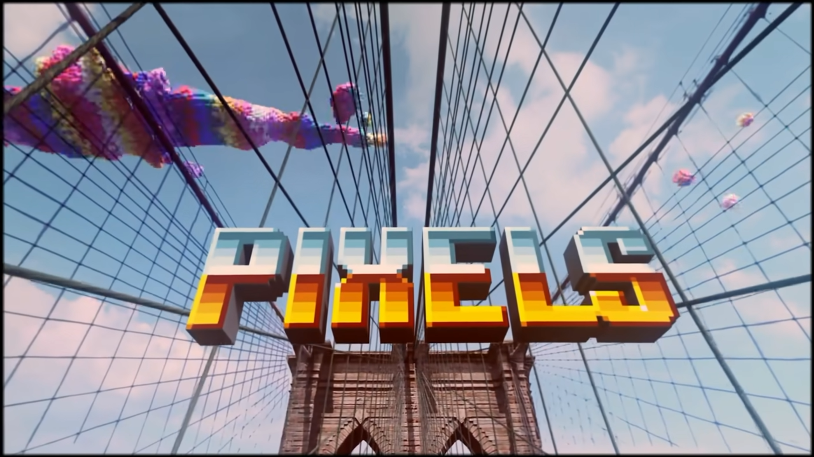
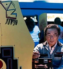
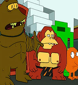
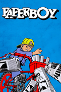
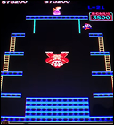
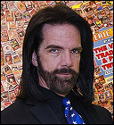

DATOS CURIOSOS

Basada en un cortometraje de 2010
La película está basada en un cortometraje del año 2010 realizado por el director francés Patrick Jean. La gran diferencia entre ambos films es que mientras el cortometraje recibió un premio al mejor corto animado en el festival de Annecy en el año 2011, la película no dejó de recibir pésimas críticas desde su lanzamiento.

El verdadero creador de Pac-Man actua en la película
Si bien el creador de Pac-Man, Toru Iwatani, es personificado por el actor Denis Akiyama, el verdadero Iwatani también aparece brevemente en la película. Iwatani no actuó de él mismo básicamente porque no sabía hablar en inglés.

¿Se copiaron de Futurama?
Toda la película se parece muchísimo a un episodio de Futurama, en donde unos extraterrestres con forma de personajes de videojuegos atacan, y Fry es la única esperanza del planeta, ya que es el único que conoce estos juegos.

¿Por qué hay un cameo de Paperboy?
muchos gamers quizás notaron que el niño de Paperboy aparece llegando al final de la película. El problema es que Paperboy no salió hasta 1985, tres años después de que el satélite con todos los juegos fuera lanzado al espacio.

Todos los records de la película se pueden romper en la vida real
Todos los records que rompen los personajes en cada videojuego son completamente posibles: El record de Sam Brenner es el máximo que se puede conseguir en Pac-Man, el de Lamonsoff es 1 punto más alto que el record mundial de Centipede y el de Eddie Plant es 100 puntos más altos que el record mundial de Donkey Kong.

Eddie Plant está inspirado en varios gamers reales.
Eddie Plant, el personaje que hace Peter Dinklage en la película, está basado en varios jugadores profesionales de videojuegos de los años 80. Entre otras cosas, sus tatuajes son los mismos de Eddie Knucklez, su pose y lentes de sol son iguales a Patrick Scott Patterson, y su corte de pelo es parecido al de Billy Mitchell.